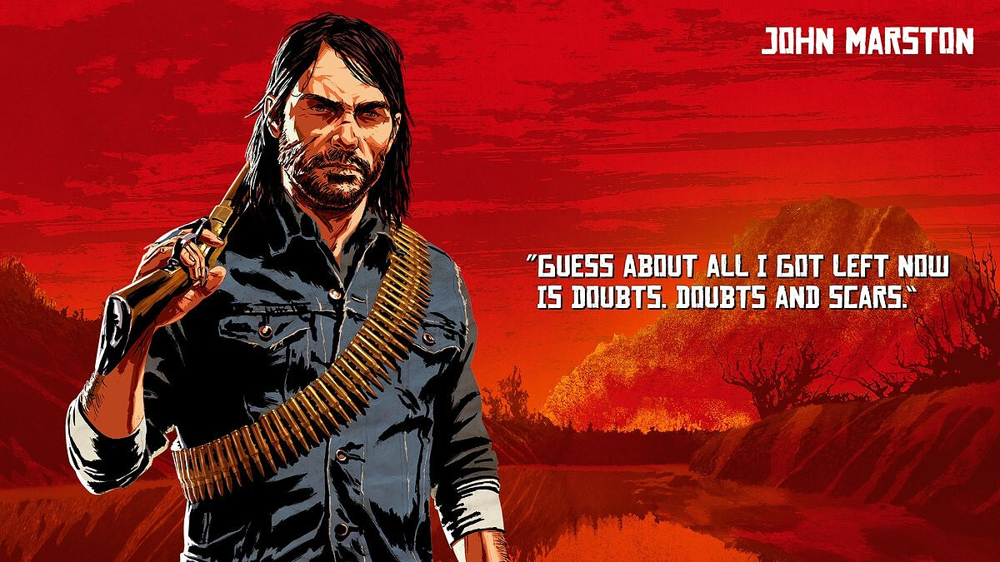

Dutch Van Der Linde
"They're chasing us so hard, because we represent everything that they fear."
Dutch Van Der Linde is the leader of a large gang of thugs and renegades. He is an idealistic, charismatic, well-read man, but at the same time, like a real anarchist, he wants to try all the joys of the modern world.
In Red Dead Redemption, he acted as one of the main antagonists, but in the second part he is one of the main character's associates.
Dutch Van Der Linde in Red Dead Redemption
Dutch Van Der Linde in Red Dead Redemption 2
Arthur Morgan
"We're thieves, in a world that don't want us no more."
The main character of Red Dead Redemption 2. Even as a child, as a boy, Arthur Morgan became the most skilled and trusted fighter in Dutch Van Der Linde's squad, so his whole life is one big criminal adventure for him.
He is a cunning, calculating and ruthless man, nevertheless, having a certain code of honor. Arthur always does his job to the end.
Arthur Morgan in Red Dead Redemption 2
Sadie Adler
"Nobody's taking nothing from me ever again."
A widow consumed with a thirst for revenge for her murdered husband. Sadie has nothing left to lose, which means she's not the right woman to build a relationship with. However, she appreciates her friends. This is a completely new character for the series, which appeared only in Red Dead Redemption 2.
Sadie Adler in Read Dead Remenption2
Sean MacGuire
"Just leave it to me. I can talk a dog off a meat wagon"
It was first shown in Red Dead Redemption 2, lit up in one of the trailers. He is a young and very resourceful Irish thief, whose family consisted entirely of criminals and political dissidents. He is always willing to take part in a risky adventure, and in any situation he is confident in himself. Perhaps too much..
Sean MacGuire in Read Dead Remenption2
Reverend Swanson
"I had real suffering and i lost everything , my vocation , my faith, my family"
Appeared only in the second part of the series. A former priest, long gone from the ideals of his flock. Swanson has violated all the tenets that he once diligently adhered to. If he hadn't saved Dutch Van Der Linde one day, it's unlikely even thugs would have hung out with him for so long.
John Marston
"Guess about all i got left now is doubts and scars"
Having come under the wing of Dutch Van Der Linde at the age of 12, an orphan and street urchin named John always tried to live wisely. Sturdy, fearless and strong-willed, he is paired with Arthur Morgan as one of Dutch's best men. Jack Marston's own father.
John is the main character of the original RDR and the Undead Nightmare expansion. They can also be played in multiplayer. In Red Dead Redemption 2, this character will also be there, but it is unknown if he is playable.
John Marston in Red Dead Redemption 1
John Marston in Red Dead Redemption 2
Micah Bell
"I believe there's winners and losers... and nothing else besides"
A hardened criminal and a hired killer. Wild and unpredictable, Mika Bell lives only for the thrill. It was first introduced in Red Dead Redemption 2.
Micah Bell in Read Read Redemption 2
Charles Smith
"The amount of hell we've raised , we're owed some back"
He joined the gang relatively recently. Charles is quiet and reserved, but takes his duties very seriously, whatever they may be. He behaves decently and honestly, but in battle he becomes a truly dangerous opponent who will kill a person without any hesitation.
First appeared in RDR2. He is a Native American (Indian). He became a member of the Dutch gang until 1899.
Charles Smith in Read Dead Redemption 2
Jack Marston
"Did you catch the bad guys?"
Young Jack grew up with the gang, although his entire entourage tried to protect the young man from criminal elements. Mother Abigail worked the hardest in this field. He loves everything related to life outside of large cities, and closely monitors his numerous relatives.
Jack Marston is one of the central characters and concurrently the second main character in Red Dead Redemption. John Marston's own son. For it, you can play multiplayer with the Liars and Cheats add-on installed. In Red Dead Redemption 2, Jack Marston is still very young.
Young Jack Marston in Read Dead Redemption 1 (right)
The Grown-up Jack Marston in Red Dead Redemption

Jack Marston in Red Dead Redemption 2 (fourth from right, sitting on Abigail Roberts' lap)